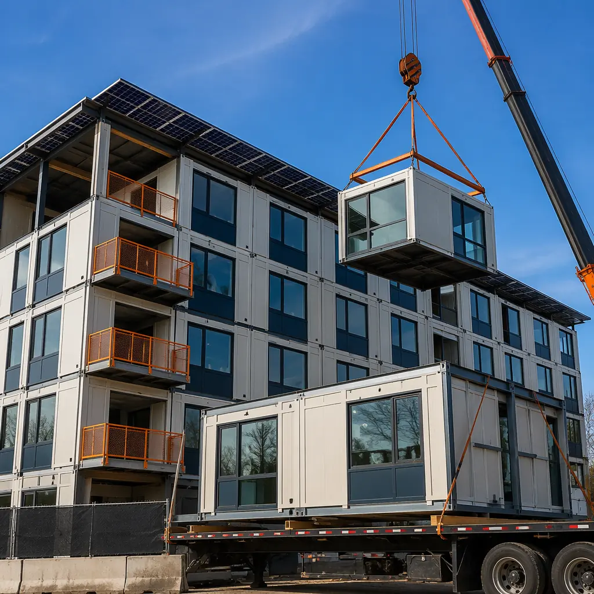
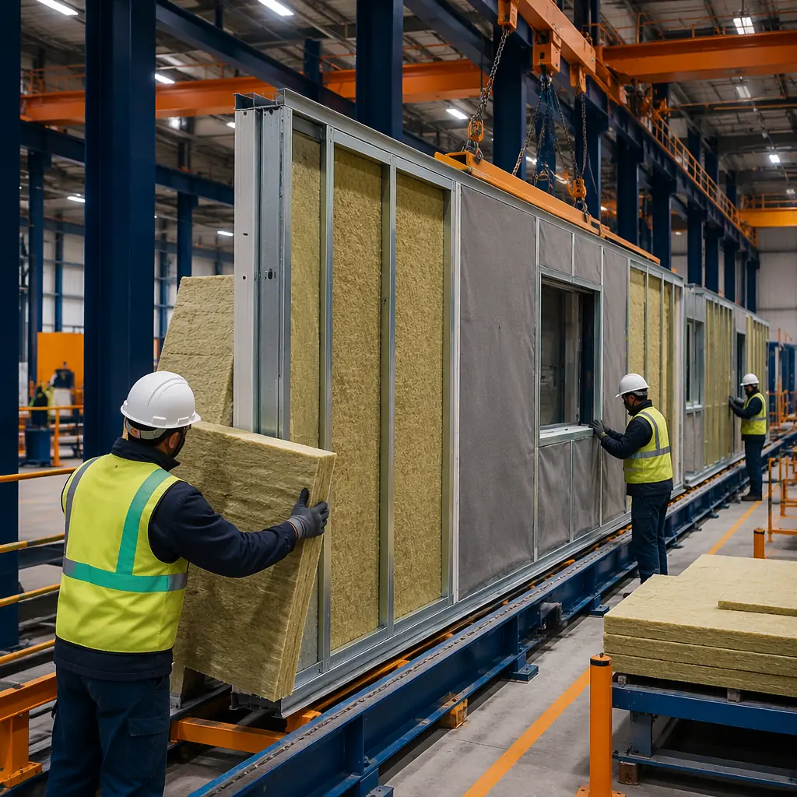
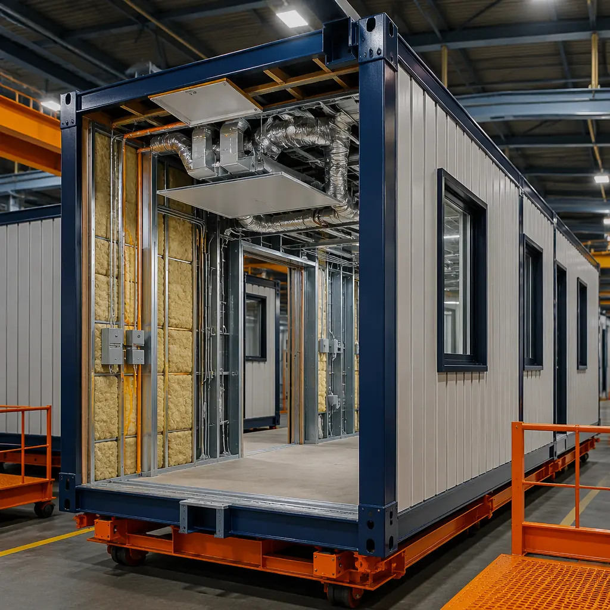
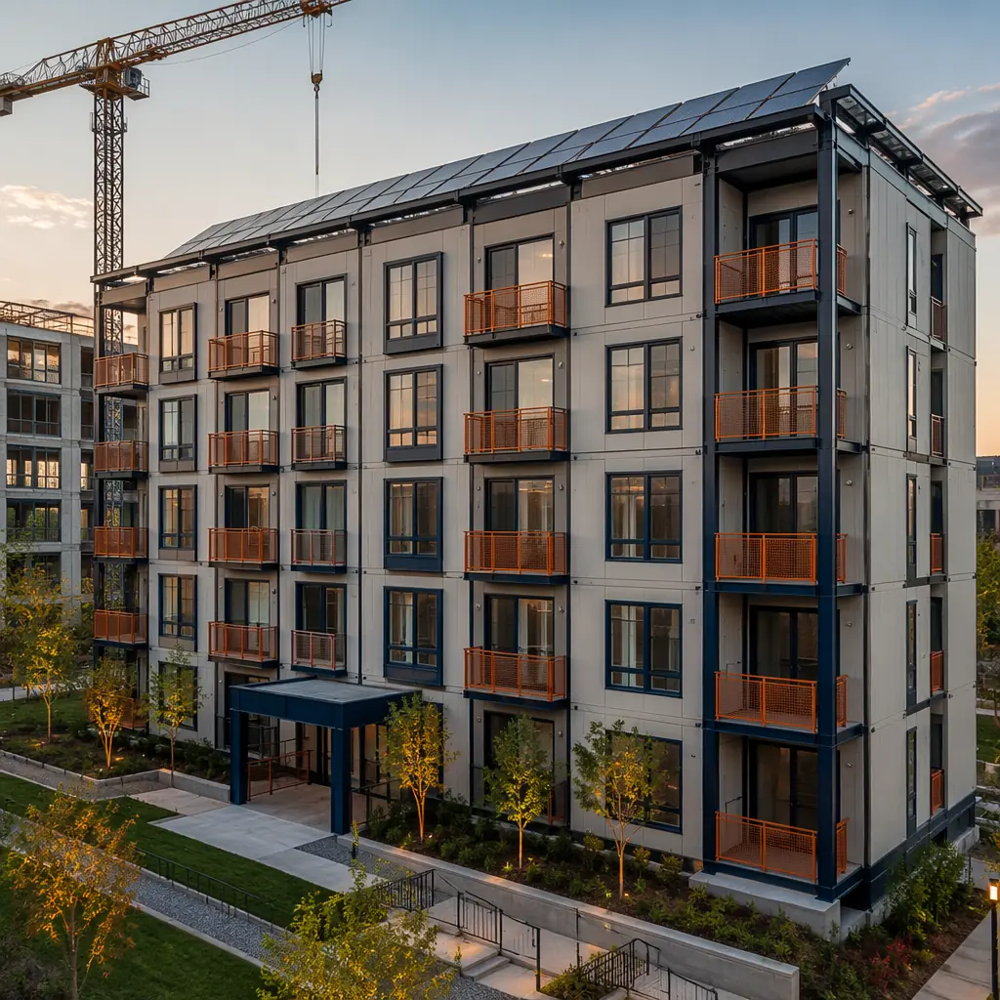
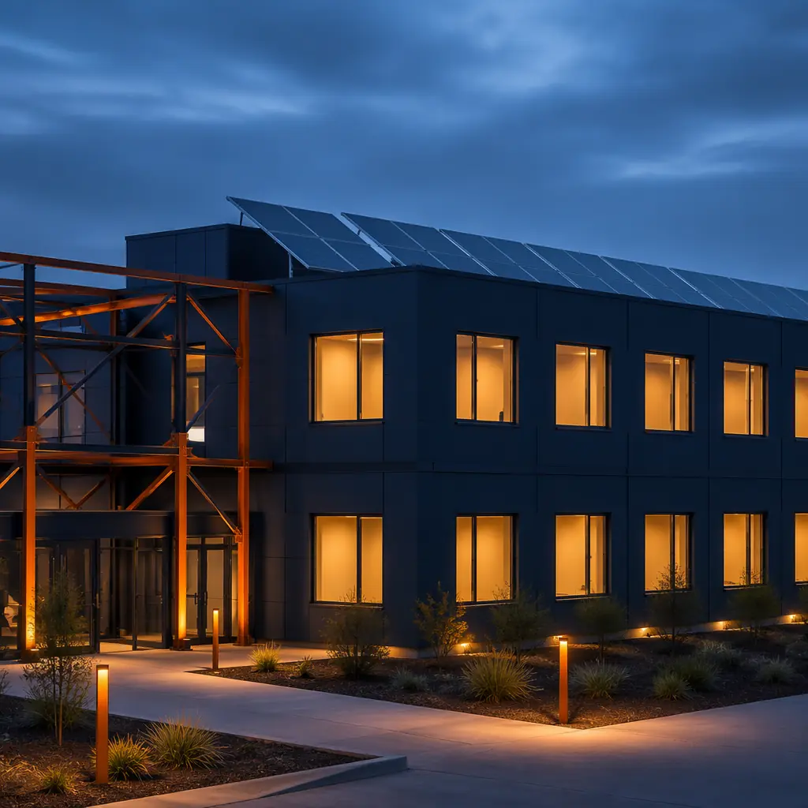

Energy costs are the single largest operating expense for most commercial buildings over a 30-year lifecycle — exceeding even the initial construction cost. A building that consumes 30% less energy does not just save on utility bills; it reshapes the entire financial model. Modular prefabrication achieves this not through expensive bolt-on technologies, but through something simpler: factory precision that site construction cannot replicate. This article explains the specific mechanisms by which modular construction outperforms traditional building on energy performance, backed by data from MODURA's 500+ completed projects across 18 countries.

Why Factory-Built Means Energy-Efficient — The Precision Advantage
On a construction site, the thermal envelope — the barrier between conditioned interior and outdoor air — is assembled by multiple trades across weeks or months, exposed to weather, and subject to the skill variance of individual crews. In a modular factory, the same envelope is assembled under a roof, on a jig, by a dedicated team that repeats the process hundreds of times. The difference is not theoretical; it is measured in air changes per hour.
Blower door testing consistently shows modular buildings achieving 1.5–3.0 air changes per hour at 50 Pascals (ACH50). Traditional site-built construction, even when targeting energy codes, typically lands between 4.0 and 7.0 ACH50. Each additional air change represents conditioned air leaking out and unconditioned air leaking in — driving heating and cooling loads that compound across decades of operation. For a 50,000 sq ft building in a mixed climate, the difference between 2.5 ACH50 and 5.5 ACH50 translates to approximately $18,000–$25,000 in additional annual HVAC energy costs.
This precision extends to every layer of the thermal envelope. In the factory, insulation is installed in controlled conditions — no wind blowing batts out of alignment, no rain soaking fiberglass before the vapor barrier goes on, no gaps left behind electrical boxes because the electrician and the insulator were scheduled on different days. The result is a continuous thermal barrier that performs as designed, not as site conditions allowed.

Continuous Insulation — The Modular Difference
Building codes increasingly require continuous insulation (ci) — an uninterrupted layer of insulation across all structural members, eliminating the thermal bridging that occurs when studs conduct heat through the wall. Achieving true continuous insulation on-site is difficult; even conscientious installers leave gaps around fasteners, at floor-to-wall transitions, and where mechanical penetrations pass through the envelope.
Modular construction solves this by shifting insulation installation from the unpredictable site environment to a factory assembly line where each module's six sides — floor, ceiling, and four walls — are insulated as discrete units. The module-to-module connection points are designed with integrated thermal breaks: compressible gaskets, offset stud alignments, and insulated mating surfaces that prevent the steel frame from creating a thermal bridge across the building.
The insulation materials themselves benefit from factory installation. Spray polyurethane foam (SPF) applied in a climate-controlled factory cures to its specified R-value — R-6.5 to R-7.0 per inch for closed-cell — without the temperature and humidity variables that can reduce on-site SPF performance by 10–15%. Rigid mineral wool and polyisocyanurate boards are cut on CNC tables to within 3mm tolerance, eliminating the field-cut gaps that degrade whole-wall R-values in traditional construction.
| Insulation Method | Effective R-Value (Wall) | Thermal Bridge Factor | Site vs Factory |
|---|---|---|---|
| Fiberglass batts, steel stud | R-9 to R-11 | 0.40–0.55 | Site only |
| Closed-cell SPF, steel stud | R-19 to R-21 | 0.15–0.25 | Factory (better cure) |
| Rigid mineral wool + SPF hybrid | R-26 to R-30 | 0.08–0.15 | Factory only |
| Vacuum insulated panels (VIP) | R-40 to R-50 | 0.05–0.10 | Factory only (fragile) |
A building's energy performance is determined not by the R-value on the insulation label, but by the R-value of the installed assembly — including every gap, compression, and thermal bridge that site construction introduces. Modular construction eliminates the gap between specified and installed performance. When you spec R-26, you get R-26.
HVAC Integration — Sizing It Right in the Factory
Oversized HVAC equipment is one of the most common and costly energy inefficiencies in commercial buildings. When a mechanical engineer sizes equipment for a site-built building, they apply safety factors to account for the uncertainty in envelope performance — how leaky will the building actually be? The result is equipment 20–40% larger than needed, which short-cycles, fails to dehumidify properly, and consumes more energy than a right-sized system would.
In modular construction, the HVAC design team knows the exact thermal performance of each module before it leaves the factory. Blower door tests on completed modules provide verified air leakage data — not estimates. The mechanical system can be sized to actual load calculations with confidence, typically resulting in equipment 15–30% smaller than site-built equivalents. Smaller equipment costs less to purchase, less to operate, and less to maintain over its lifecycle.
Ductwork benefits from factory installation as well. In traditional construction, ducts are installed in attics and crawl spaces — outside the thermal envelope — where leakage rates of 20–30% are common. Modular buildings keep ducts within the conditioned envelope of each module, and every joint is sealed and tested in the factory. The Department of Energy estimates that duct leakage accounts for 10–30% of heating and cooling energy in typical commercial buildings; factory-sealed ductwork reduces this to under 5%.

Renewable Energy Integration — Solar-Ready by Design
Modular buildings are structurally pre-engineered for rooftop solar. Because the roof structure of each module is fabricated as a discrete, engineered component in the factory, it can be designed from the outset to carry the additional dead load of a photovoltaic array — typically 4–6 lbs per square foot for rack-mounted panels. Retrofitting solar onto a traditionally-built roof often requires structural reinforcement, which adds $3–$8 per square foot to the installation cost.
The modular approach also simplifies the electrical integration. Each module's electrical system — conduits, inverters, disconnect switches — can be pre-wired in the factory with solar-ready connection points. When modules are assembled on-site, the connection between the rooftop array and the building's electrical panel requires only the final inter-module connections, reducing field electrical labor by 40–60% compared to a traditional solar retrofit.
For developers targeting net-zero energy performance, modular construction provides a clear path. A building with a factory-verified thermal envelope achieving 2.0 ACH50, continuous insulation at R-26, and right-sized HVAC typically reduces energy consumption by 35–50% compared to code-minimum traditional construction. The remaining load can be offset by a smaller — and therefore less expensive — solar array. In many climate zones, the combination of modular efficiency and rooftop solar brings net-zero within reach at a cost premium of only 8–12% over standard construction, compared to 20–30% for traditional net-zero builds.
This approach aligns with the sustainability performance documented across MODURA's project portfolio — including the LEED certification pathway that modular construction simplifies through factory-controlled material management and the 70% waste reduction inherent to off-site fabrication.
Energy Performance Data — What the Numbers Show
The energy efficiency advantage of modular construction is not anecdotal. Post-occupancy energy data from completed modular buildings shows consistent outperformance relative to both code baselines and traditional construction benchmarks:
- 30–50% reduction in total energy use intensity (EUI) compared to ASHRAE 90.1-2019 baseline for modular buildings with enhanced envelope packages. A 50,000 sq ft modular office building at 35 kBtu/sq ft/year versus 55–65 for code-minimum traditional construction saves approximately $32,000 annually at $0.12/kWh.
- 40–60% reduction in heating load due to the combination of continuous insulation, reduced air leakage, and elimination of thermal bridges. In cold climates (ASHRAE zone 6+), this alone can reduce the required heating system capacity by 15–25 tons for a mid-rise building.
- 25–35% reduction in cooling load from factory-sealed envelopes that prevent hot, humid outdoor air from infiltrating. The dehumidification burden — often the dominant cooling load in mixed-humid climates — drops proportionally with air leakage.
- Measured ACH50 of 1.8–2.5 across MODURA's last 50 completed projects, verified by third-party blower door testing. This performance level exceeds the 3.0 ACH50 target of the Passive House Institute's EnerPHit standard for retrofits — achieved in new modular construction without the cost premium of Passive House certification.

Comparing Lifetime Energy Costs — Modular vs Traditional
To make the energy efficiency argument concrete, consider a 60,000 sq ft, four-story building — representative of a modular apartment or mixed-use project. The following comparison models a 30-year operating period with 3% annual energy cost escalation:
| Metric | Traditional Build | Modular Build | 30-Year Delta |
|---|---|---|---|
| Design EUI (kBtu/sq ft/yr) | 58 | 35 | −40% |
| Annual energy cost (Year 1) | $118,320 | $71,400 | −$46,920/yr |
| 30-year cumulative energy cost | $5,640,000 | $3,400,000 | −$2,240,000 |
| HVAC equipment cost savings | — | $60,000–$90,000 | Upfront savings |
| 30-year net advantage | — | — | $2.3M+ |
The $2.3 million 30-year energy cost advantage does not include the additional revenue from accelerated occupancy — a modular building that opens 8–12 months earlier than a traditional build generates income during months when its conventional counterpart is still under construction. When this revenue acceleration is factored in alongside modular construction ROI, the total financial advantage of modular over a 30-year hold period frequently exceeds $4 million for a building of this scale.
Energy efficiency is the gift that keeps on compounding. A one-time investment in a factory-precision thermal envelope pays dividends every month for 30 years — and those dividends grow at the rate of energy cost inflation. The developer who understands this is the developer who builds modular.
Going Further — Energy Efficiency Beyond the Building Envelope
For developers who want to push energy performance further — targeting net-zero, Passive House, or Living Building Challenge certification — modular construction provides an ideal platform. Several advanced strategies become cost-effective when the base envelope performance is already high:
- Energy recovery ventilators (ERVs). With a tight envelope at 2.0 ACH50, mechanical ventilation becomes mandatory rather than optional. ERVs recover 60–85% of the energy from exhaust air to pre-condition incoming fresh air — a technology that pays for itself within 3–5 years when applied to a low-leakage building.
- Triple-glazed windows with thermally broken frames. The incremental cost of upgrading from double to triple glazing ($8–$12/sq ft of window area) is often recovered within 7–10 years in heating-dominated climates when the rest of the envelope is already high-performance. Installing triple glazing in a leaky building wastes the investment; installing it in a modular building with 2.0 ACH50 maximizes the return.
- Phase-change materials (PCMs). PCMs embedded in ceiling panels or wallboard absorb heat during the day and release it at night, reducing peak cooling loads by 15–25%. Factory integration makes PCM installation straightforward — the panels are cut and installed in controlled conditions, without the handling damage that often occurs on-site.
- Building-integrated photovoltaics (BIPV). Solar panels that double as the building's exterior cladding eliminate the cost of separate cladding materials. The controlled factory environment allows precise BIPV panel mounting with factory-tested electrical connections between modules.
For projects in extreme climates — from remote workforce housing in northern latitudes to desert industrial facilities — the combination of modular precision and advanced energy strategies can reduce total energy consumption by 60–80% relative to code-minimum traditional construction.
